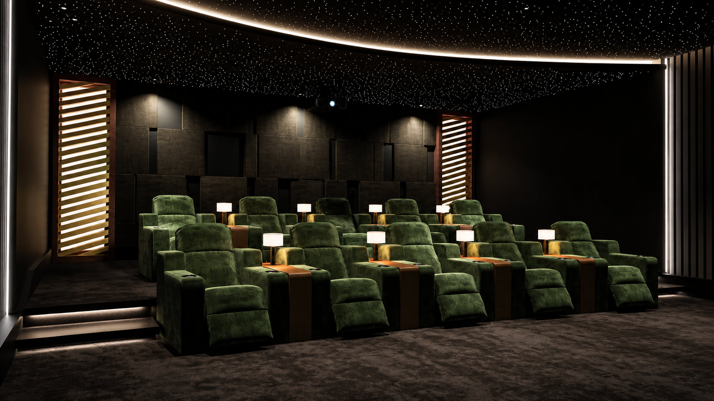
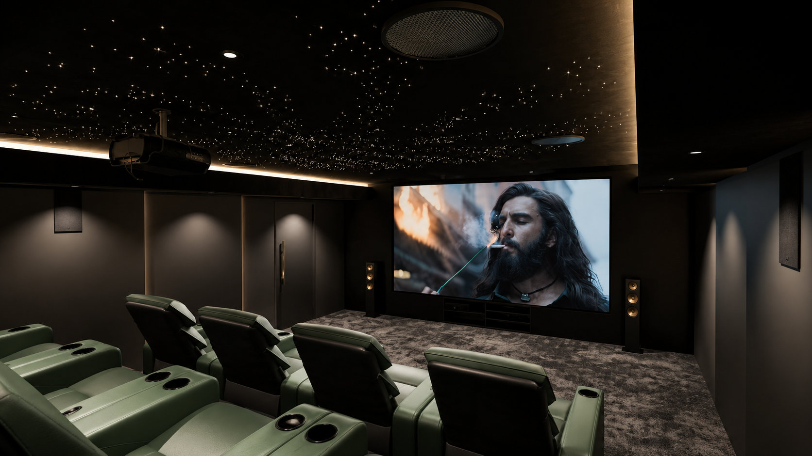

Home / Acoustic Solution
The science of listening
ACOUSTIC SOLUTION
Great sound is not just better speakers. It is a room that lets every frequency arrive at every seat with clarity, weight and balance. We design that room.
Room first. Equipment second.
YOUR ROOM IS PART OF THE SPEAKER
Hard parallel walls create flutter echo. Glass reflects treble. Bare corners trap bass into a muddy boom. Even premium equipment cannot overcome a room that fights it. Acoustic design is how we remove that fight — deliberately, measurably and beautifully.
We begin with measurements and modelling, then specify absorption, diffusion, bass control and isolation in the exact quantities and positions your room needs. The result is sound that feels effortless: dialogue you never strain for, bass you feel without boom, and detail that survives all the way to the back row.
35%
Cleaner dialogue
50%
Tighter bass
9 dB
Less sound leak
Live analysis
ROOM RESPONSE
Reverberation
RT60 · 0.32s
Coverage
±1.5 dB
Illustrative measurement · actual results vary by room

M.A.P.S
Modular Acoustic
Panel System
Serviceable by design
Signature invention
ANY DESIGN. FULL ACCESS. NO COMPROMISE.
This is one of the inventions by Dr. Himanshu Kumar (Mentor) — a system that not only allows any design pattern a designer can imagine, but also keeps the services behind the acoustic panels easy to reach. MAPS is today used by many of his students around the world.
- Modular panels in bespoke patterns, colours and finishes
- Hidden access to wiring, speakers and lighting services
- Predictable, repeatable acoustic performance
- Easy maintenance without damaging the room
What we treat
A FULL ACOUSTIC TOOLKIT
Every intervention has a purpose. We combine them in the right proportions for your room — never a one-size-fits-all panel pack.
Absorption
Controlled absorption of mid and high frequencies to remove harsh reflections, echo and listener fatigue.
Diffusion
Sculpted surfaces that scatter sound evenly — keeping the room lively and detailed instead of dead and flat.
Bass Control
Pressure-based bass traps and tuned resonators that stop low frequencies from building up in corners and modes.
Soundproofing
Mass, decoupling and isolation detailing to keep cinema sound inside — and the rest of the world outside.
Room Correction
Digital calibration layered on top of physical treatment for a final response tuned to reference curves.
Mechanical Quiet
Isolated HVAC, projector and equipment noise so the quietest moments in a film stay truly quiet.
Beyond the home
SPACES THAT NEED TO SOUND RIGHT
We bring the same measurement-led approach to commercial and public spaces — where clarity, intelligibility and consistency across every seat are non-negotiable.
Auditoriums & theatres
Speech intelligibility and even musical coverage.
Boardrooms & conference
Clear conferencing without slap echo or dead zones.
Commercial multiplexes
Reference presentation from front row to back.
Studios & content rooms
Accurate monitoring you can genuinely trust.

EVERY SEAT. THE BEST SEAT.
Our acoustic promise
Acoustic FAQs
SOUND QUESTIONS
If your room sounds “boomy”, “echoey” or “thin”, it is almost certainly a treatment problem — not an equipment problem. We can help.
Book an AssessmentListen better
HEAR WHAT YOUR ROOM HAS BEEN HIDING
Book an acoustic assessment and receive a clear, prioritised plan — whether you need one panel or a full build.
Request an Assessment